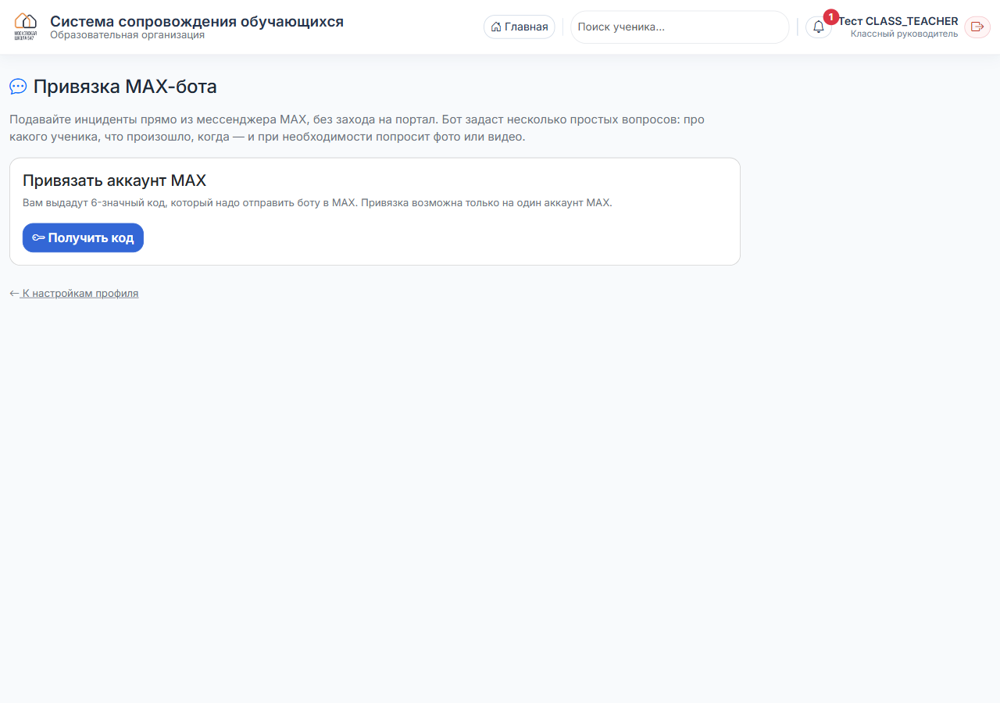
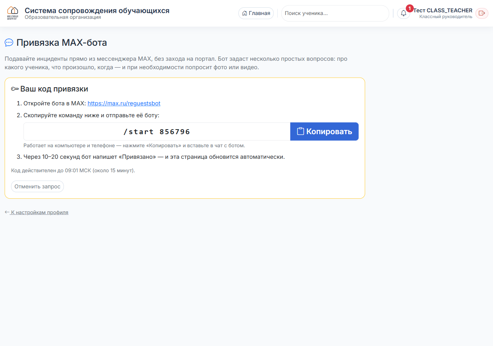
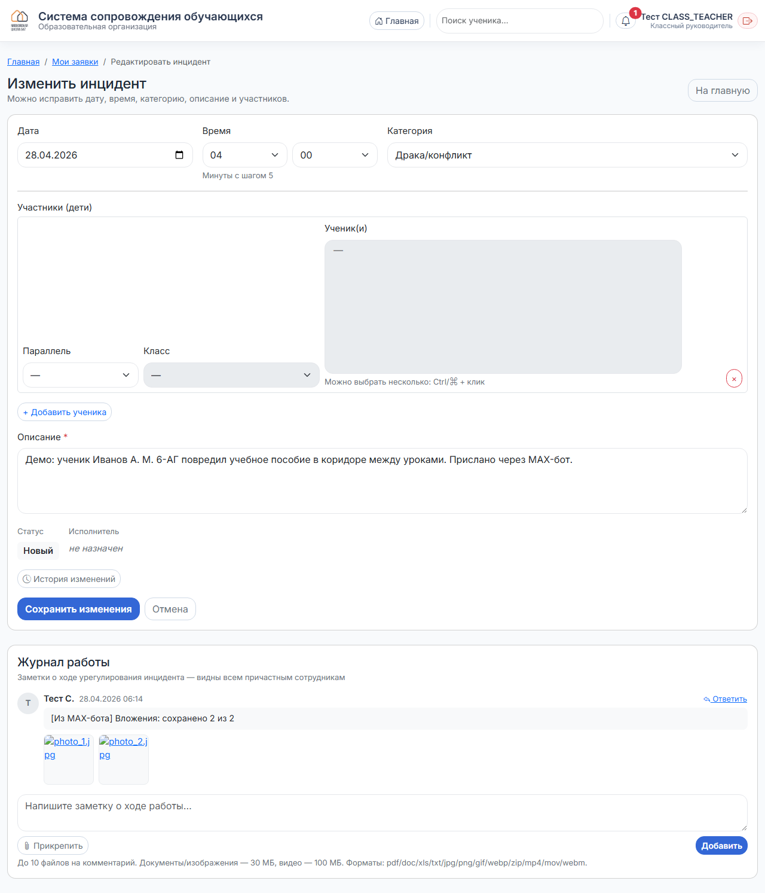

Как подавать инциденты прямо из мессенджера MAX — без захода в браузер.
В мессенджере MAX откройте поиск и найдите бота @reguestsbot. Откройте чат и нажмите «Запустить». Бот сразу напишет:
В браузере: ваше имя в правом верхнем углу → Профиль → вкладка «MAX-бот». На странице будет одна кнопка «Получить код»:

Привязка возможна только на один аккаунт MAX. Если вы привязывали раньше с другого устройства — старая привязка снимется автоматически.
Нажмите «Получить код». Появится команда вида /start 856796 и срок действия — около 15 минут:

Кнопка «Копировать» кладёт команду в буфер обмена — удобно для телефона.
Страница сама обновится, как только бот подтвердит привязку — F5 нажимать не нужно.
Вернитесь в чат с ботом в MAX и вставьте скопированную команду:
Страница профиля в браузере одновременно сменится на статус «Привязано» с кнопкой «Отвязать».
Если код неверный или просрочен — получите новый на портале. После 5 неверных попыток подряд — пауза на 1 час.
Нажмите «📝 Новый инцидент». Бот ведёт пошаговый мастер:
Сначала бот просит ввести фамилию ученика. Поиск идёт по всем классам школы. После выбора первого ученика появляется кнопка «➕ Ещё ученика» — её можно нажимать столько раз, сколько участников нужно прикрепить (например, при драке или конфликте между несколькими).
Если события касаются нескольких учеников — нажмите «➕ Ещё ученика» и впишите следующую фамилию. Все они попадут в одну заявку.
Дальше — выбор категории (Драка/конфликт, Буллинг, Травма и т.д.). Затем поле описания, куда можно отправлять и текст, и фото/видео — несколькими сообщениями подряд:
Этот шаг можно пропустить. Если вы уже что-то предприняли (поговорили с учеником, позвонили родителям, сообщили классному руководителю) — напишите коротко. Текст появится первой записью в журнале работы над инцидентом — чтобы исполнителю не нужно было ничего у вас переспрашивать.
Инцидент можно подавать только не позже 48 часов с момента события. Это правило одинаковое и в боте, и в браузерной версии — задним числом старше двух суток заявку не примет ни одна, ни другая. Если событие старше — обращайтесь напрямую к ADMIN или DEPUTY (они могут править дату вручную).
Дата и время выбираются кнопками: «Сегодня / Вчера / Позавчера» → час → минуты (с шагом 15).
Файлы автоматически попадают в карточку инцидента — отдельной записью в журнале работы. Можно открыть и скачать прямо со страницы:

Поддержка: фото (jpg/png/gif/webp), видео (mp4/mov/webm), документы (pdf/doc/docx/xls/xlsx/txt), архивы (zip). Лимит: 100 МБ на файл (видео), 30 МБ на остальное, до 10 файлов на одну заявку. Файлы проверяются по сигнатуре — если содержимое не соответствует поддерживаемому типу, оно будет отклонено, а заявка всё равно создастся.
В Профиле → «MAX-бот» нажмите «Отвязать». После этого бот напишет «Привязка отменена со стороны портала» и перестанет принимать от вас инциденты, пока не привяжете заново.
@reguestsbot, и нажали «Запустить».По всем сложностям — администратору системы.